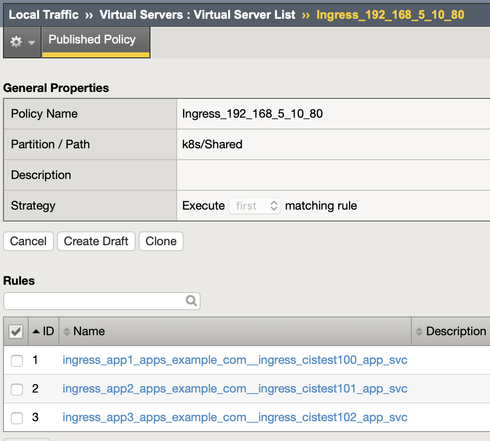

git clone https://github.com/cloudadc/container-ingress.git
cd container-ingress/f5-cis/install-on-kube-system/F5 Container Ingress Service
Table of Contents
Installation
Install on kube-system
Get Code
Install
kubectl create secret generic bigip-login --from-literal=username=admin --from-literal=password=admin.F5demo.com -n kube-system
kubectl create serviceaccount bigip-ctlr -n kube-system
kubectl create -f rbac.yaml
kubectl create -f cis.yamlUninstall
cd install-on-kube-system/
kubectl delete -f cis.yaml
kubectl delete -f rbac.yaml
kubectl delete serviceaccount bigip-ctlr -n kube-system
kubectl delete secret bigip-login -n kube-systemInstall on bigip-ctlr
Get Code
git clone https://github.com/cloudadc/container-ingress.git
cd container-ingress/f5-cis/install-on-bigip-ctlr/Install
kubectl create ns bigip-ctlr
kubectl create secret generic bigip-login --from-literal=username=admin --from-literal=password=admin.F5demo.com -n bigip-ctlr
kubectl create serviceaccount bigip-ctlr -n bigip-ctlr
kubectl create -f rbac.yaml
kubectl create -f cis.yamlUninstall
cd install-on-bigip-ctlr/
kubectl delete -f cis.yaml
kubectl delete -f rbac.yaml
kubectl delete serviceaccount bigip-ctlr -n bigip-ctlr
kubectl delete secret bigip-login -n bigip-ctlr
kubectl delete ns bigip-ctlrNamespaces isolation
--namespace-label
As depicted in below figure:

-
同一个 K8S 内，一个 CIS 可只监控一个分区，多个 CIS 并行工作，确保了容器计算层 CIS 的性能
-
同一个 K8S 内的 Service 可以发布到不同的 F5 HW/VE，确保了容器路由层 F5 的性能
1. cis argument
"--namespace-label=cis_scanner_zone=zone_1",2. Get Code
git clone https://github.com/cloudadc/container-ingress.git
cd container-ingress/f5-cis/namespaces-isolation3. Deploy 4 apps within 4 namespaces
kubectl create -f cis.yaml
$ kubectl get ns --show-labels | grep cistest10*
cistest100 Active 78s cis_scanner_zone=zone_1
cistest101 Active 78s cis_scanner_zone=zone_1
cistest102 Active 78s cis_scanner_zone=zone_1
cistest103 Active 78s <none>the first 3 namespace has cis_scanner_zone, the cistest103 didn’t.
4. deploy ingresses
kubectl apply -f ingress.yamlthere will be 4 ingress object created, only the first 3 will deploy to F5 due to the namespace isolation.

5. deploy configmap
kubectl apply -f cm.yamlthere will be 4 configmaps created, only the first 3 will deploy to F5 due to the namespace isolation.

CIS Robust Test
Re-create CIS POD
// CIS + AS3 Deploy 2 services
kubectl create -f cis.yaml
kubectl apply -f deploy.yaml
kubectl apply -f cm.1.yaml
// Execute the following commands simultaneously to deploy 3rd service
kubectl delete pod $(kubectl get pods -n bigip-ctlr --no-headers | awk '{print $1}') -n bigip-ctlr
kubectl apply -f cm.2.yaml
// Force cistest101 pod restart
kubectl delete pod $(kubectl get pods -n cistest101 --no-headers | awk '{print $1}') -n cistest101
//Delete all service
kubectl delete -f cm.2.yamlRefer to link for more details.
Re-start F5 VE
Refer to link for detailed steps.